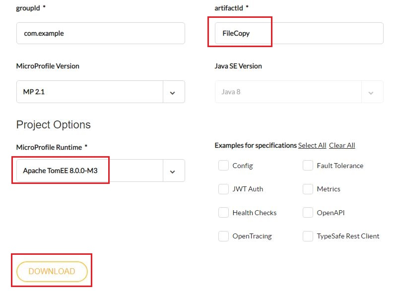
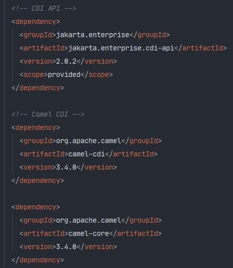
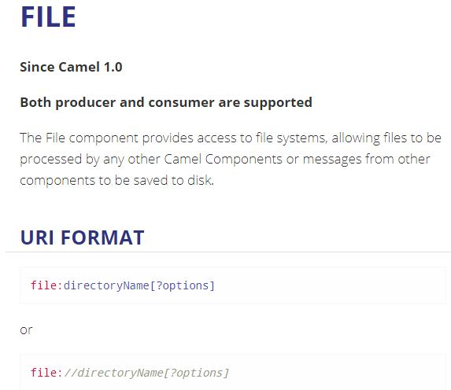
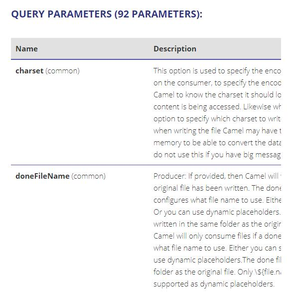

ΕΝΟΤΗΤΑ 1 APACHE CAMEL - ENVIRONMENT SETUP AND SIMPLE FILE COPY EXAMPLE
Από το σημερινό δωρεάν μάθημα Apache Camel ξεκινάμε μια σειρά μαθημάτων τα οποία θα καλύψουν θέματα από system integration μέχρι microservices. Θα πρέπει να έχετε παρακολουθήσει κάποιο σεμινάριο στην Java ή να έχετε διαβάσει τις ενότητες στο https://kassapoglou.github.io/java/java-programming.html για να μπορέσετε να ακολουθήσετε τα μαθήματα. Τα παραδείγματα θα είναι απλά και θα ακολουθούνται από αρκετή θεωρία όπως άλλωστε είναι και η λογική αυτού του site. Ας ξεκινήσουμε λοιπόν.
Το πιο κοινό σενάριο όταν αναλαμβάνεται την δημιουργία κώδικα σε enterprise συστήματα είναι να καταφέρετε να ενώσετε την καινούργια εφαρμογή που δημιουργείται με υπάρχοντα συστήματα. Αυτό σε τεχνική ορολογία ονομάζεται system integration. Η πιο πιθανή σας προσέγγιση δεν θα είναι να κατανοήσετε την λειτουργία του συστήματος που υπάρχει ήδη αλλά πως θα μπορέσετε πετυχημένα να ανταλλάξετε δεδομένα μαζί του. Δεν θα ήταν καθόλου συνετό, (αν και δεν είναι ακατόρθωτο) να δημιουργήσετε από το μηδέν τον κώδικα που ενοποιεί τα συστήματα, γιατί θα ήταν μια δαπανηρή προσπάθεια και μπορεί και να μην είχε και απόλυτη επιτυχία. Η καλύτερη σας επιλογή θα ήταν να ψάξετε για ένα έτοιμο framework που μπορεί να σας προσφέρει με τον ελάχιστο δυνατόν κώδικα τις υπηρεσίες που ζητάτε. Αυτό το framework ονομάζεται Apache Camel και είναι πολύ γνωστό ανάμεσα στους προγραμματιστές για τις δυνατότητες του.
Το Camel framework στηρίζεται σε έναν μηχανισμό δρομολόγησης (routing engine builder) ο οποίος αφού διαβάσει τα δεδομένα από κάποιο προκαθορισμένο σημείο, τα επεξεργάζεται και αποφασίζει σε ποιον προορισμό ή προορισμούς να στείλει με βάση τους κανόνες δρομολόγησης που του έχουμε ορίσει. Η γλώσσα στην οποία στηρίζεται το Camel framework για να ορίσει τους κανόνες δρομολόγησης ονομάζεται DSL (Domain-specific language) και είναι πολύ απλή και στηρίζεται στην λογική των business processes.
Μια από τις θεμελιώδεις αρχές του Camel είναι ότι δεν απαιτεί να μετατραπούν τα δεδομένα σε κάποια συγκεκριμένη μορφή για να μπορέσει να τα επεξεργαστεί και να αποφασίσει την δρομολόγησή τους. Αυτό επιτρέπει στο Camel να μπορεί να χρησιμοποιήσει το ίδιο API ανεξάρτητα από το πρωτόκολλο ή τον τύπο δεδομένων που χρησιμοποιούνται σε κάποιο σύστημα. Μέχρι τώρα, το Camel προσφέρει συμβατότητα με περισσότερα από 280 πρωτόκολλα και τύποι δεδομένων. Πως όμως δημιουργούμε ένα απλό Camel Route?
Βασικά, πριν ξεκινήσουμε να δημιουργήσουμε τον πρώτο μας route, θα πρέπει να αναφέρουμε τι εργαλεία χρειαζόμαστε για να μπορέσουνε να αναπτύξουμε τα προγράμματα μας.
1. Χρειάζεται να έχετε εγκαταστήσει Java 1.8 στον υπολογιστή σας
2. Είναι απαραίτητο κάποιο μοντέρνο IDE. Στα δικά μας παραδείγματα θα χρησιμοποιήσω την δωρεάν έκδοση του IntelliJ (Community Edition).
3.Όλα μας τα project θα χρησιμοποιήσουν Maven. Σας προτείνω να κατεβάσετε και να εγκαταστήσετε την τελευταία έκδοση του Apache Maven. Για την εγκατάσταση του IntelliJ όσο και για την εγκατάσταση του Maven μπορείτε να δείτε την ενότητα (https://kassapoglou.github.io/maven/learning-maven-unit1.html ) .
4. Θα χρησιμοποιήσουμε τον application server Apache Tomee με mircroprofile για να αναπτύξουμε τα προγράμματα μας. Αργότερα θα αναπτύξουμε και microservices σε αυτή την πλατφόρμα.
Σαν πρώτο βήμα, πηγαίνουμε στο (https://start.microprofile.io/) και επιλέγουμε Apache TomEE από την MicroProfile Runtime κατηγορία. Δεν χρειάζεται να επιλέξουμε τίποτα άλλο. Τα Examples for specifications είναι πληροφορίες που παίρνουμε όταν χρησιμοποιούμε το microprofile για την δημιουργία ενός project αλλά εμείς δεν θα τα χρειαστούμε. Επίσης ας αλλάξουμε το όνομα του project σε FileCopy. Οπότε πατάτε το Download για να κατεβάσετε το demo project.
Αφού κάνετε unzip το project που μόλις κατεβάσατε, χρησιμοποιείστε το IntelliJ για να το ανοίξετε. Θα χρειαστεί να κάνουμε κάποιες αλλαγές κυρίως στο POM αρχείο του project για να δηλώσουμε τις τελευταίες εκδόσεις των βιβλιοθηκών που θα χρησιμοποιήσουμε.
Σαν πρώτο βήμα, διαγράψτε τα δύο java αρχεία (FileCopyRestApplication και HelloController) μέσα από το πακέτο com.example.FileCopy.
Έπειτα ανοίξτε το POM αρχείο. Εδώ υπάρχουν αρκετές αλλαγές που θα χρειαστεί να κάνουμε. Ας τις δούμε μια προς μια.
Σαν πρώτο βήμα πρέπει να δηλώσουμε την έκδοση του Apache Camel που θα χρησιμοποιήσουμε. Με βάση το site του Apache
Camel, η πιο τελευταία έκδοση αυτή την χρονική στιγμή είναι η 3.4.0. Οπότε προσθέτουμε το εξής dependency αμέσως
μετά το
Σαν δεύτερο βήμα πρέπει να δηλώσουμε την πιο τελευταία και σταθερή έκδοση του Apache TomEE η οποία είναι η 8.0.3. Αλλάζουμε λοιπόν το tomee.version σε 8.0.3.
Στο επόμενο και τελευταίο βήμα θα πρέπει να δηλώσουμε τις βιβλιοθήκες του Apache Camel που χρειαζόμαστε για να τρέξουμε τον κώδικα μας. Σε αυτή την πρώτη ενότητα θα δείξουμε πως χρησιμοποιούμε το Apache Camel για να αντιγράψουμε αρχεία από ένα φάκελλο σε έναν άλλο φάκελλο. Αυτή η απλή λειτουργία δεν απαιτεί να φορτωθούν όλες οι βιβλιοθήκες του Apache Camel. Αργότερα όμως που θα προσθέσουμε και άλλες λειτουργίες, όπως αποστολή μηνυμάτων σε ένα εξωτερικό queue όπως το kafka, τότε θα προσθέσουμε και άλλα dependencies στο POM αρχείο. Προσθέτουμε λοιπόν τα εξής τρία dependencies:
Αφού ολοκληρώσετε όλες τις παραπάνω αλλαγές θα πρέπει το POM αρχείο να είναι ως εξής:
POM.xml
<?xml version="1.0" encoding="UTF-8"?> <project xsi:schemaLocation="http://maven.apache.org/POM/4.0.0 http://maven.apache.org/xsd/maven-4.0.0.xsd" xmlns="http://maven.apache.org/POM/4.0.0" xmlns:xsi="http://www.w3.org/2001/XMLSchema-instance"> <modelVersion>4.0.0</modelVersion> <groupId>com.example</groupId> <artifactId>FileCopy</artifactId> <version>1.0-SNAPSHOT</version> <packaging>war</packaging> <dependencyManagement> <dependencies> <!-- Add Camel BOM --> <dependency> <groupId>org.apache.camel</groupId> <artifactId>camel-bom</artifactId> <version>3.4.0</version> <type>pom</type> <scope>import</scope> </dependency> </dependencies> </dependencyManagement> <properties> <maven.compiler.target>1.8</maven.compiler.target> <failOnMissingWebXml>false</failOnMissingWebXml> <maven.compiler.source>1.8</maven.compiler.source> <tomee.version>8.0.3</tomee.version> <final.name>FileCopy</final.name> </properties> <dependencies> <dependency> <groupId>org.eclipse.microprofile</groupId> <artifactId>microprofile</artifactId> <version>2.1</version> <type>pom</type> <scope>provided</scope> </dependency> <!-- CDI API --> <dependency> <groupId>jakarta.enterprise</groupId> <artifactId>jakarta.enterprise.cdi-api</artifactId> <version>2.0.2</version> <scope>provided</scope> </dependency> <!-- Camel CDI --> <dependency> <groupId>org.apache.camel</groupId> <artifactId>camel-cdi</artifactId> <version>3.4.0</version> </dependency> <dependency> <groupId>org.apache.camel</groupId> <artifactId>camel-core</artifactId> <version>3.4.0</version> </dependency> </dependencies> <build> <finalName>FileCopy</finalName> </build> <profiles> <profile> <id>tomee</id> <activation> <activeByDefault>true</activeByDefault> </activation> <build> <plugins> <plugin> <groupId>org.apache.tomee.maven</groupId> <artifactId>tomee-maven-plugin</artifactId> <version>${tomee.version}</version> <executions> <execution> <id>executable-jar</id> <phase>package</phase> <goals> <goal>exec</goal> </goals> </execution> </executions> <configuration> <context>ROOT</context> <tomeeClassifier>microprofile</tomeeClassifier> <tomeeHttpPort>8080</tomeeHttpPort> <tomeeShutdownPort>8005</tomeeShutdownPort> <tomeeAjpPort>8009</tomeeAjpPort> </configuration> </plugin> </plugins> </build> </profile> </profiles> </project>
Ας εκτελέσουμε τώρα την mvn clean install εντολή από το Maven για να κατεβούν τοπικά οι βιβλιοθήκες που δηλώσαμε στο POM.
Τώρα μπορούμε να γράψουμε τον κώδικα για το πρώτο μας απλό παράδειγμα. Υπάρχει όμως και μια θεωρία την οποία πρέπει να αναφέρουμε για να κάνουμε και μια ομαλή εισαγωγή στο πως θα προχωρήσουμε και στις υπόλοιπες ενότητες.
Όπως ήδη αναφέραμε, το Apache Camel είναι ένα routing engine. Αυτό σημαίνει ότι με βάση κάποιους κανόνες που ορίζουμε δρομολογεί πληροφορίες από ένα σημείο σε ένα άλλο σημείο.

Το αρχικό όπως και το τελικό σημείο ονομάζονται endpoints. Στο παράδειγμα που θα δούμε σε λίγο, το οποίο έχει να κάνει με την μεταφορά ενός οποιουδήποτε αρχείο από ένα φάκελο Α σε έναν άλλο φάκελο B, ο αρχικός φάκελος όπως και ο τελικός είναι τα δύο endpoints της δρομολόγησης (route) που θα ορίσουμε.
Όμως κάθε endpoint έχει να διαχειριστεί πάρα πολλές και διαφορετικές μορφές δεδομένων. Στο δικό μας παράδειγμα, η μορφή των δεδομένων είναι ένα αρχείο. Σε άλλη περίπτωση μπορεί να ήταν ένα JSON αποτέλεσμα ενός καλέσματος σε ένα REST API. Για να μπορέσει λοιπόν το Apache Camel να ανταπεξέλθει σε όλη αυτή την διαφορετικότητα της μορφής των δεδομένων, αλλά και για να μην επιβαρύνει τον προγραμματιστή με επιπρόσθετο κώδικα, δημιούργησε μια βιβλιοθήκη με components. Αυτή η βιβλιοθήκη αναβαθμίζεται συνεχώς και η λίστα με τα components μεγαλώνει. Οπότε για το δικό μας παράδειγμα που είναι η μεταφορά ενός αρχείου υπάρχει το component FILE (https://camel.apache.org/components/latest/file-component.html) .
Κάθε component όπως και αυτό του FILE περιέχει παραμέτρους για να πετύχουν με απλό τρόπο το επιθυμητό αποτέλεσμα.
Στο δικό μας παράδειγμα, θέλουμε όταν μεταφερθεί το αρχείο από τον φάκελλο Α στον Β, να μην υπάρχει αντίγραφο του αρχικού αρχείου στο φάκελλο Α. Για να το καταφέρουμε αυτό, ορίζουμε την παράμετρο delete και την θέτουμε ίσον με true όπως δείχνει και το παράδειγμα από το documentation του Apache Camel.

Για να ανακεφαλαιώσουμε όλα όσα έχουμε πει ας δούμε ποιο είναι το επιθυμητό σενάριο. Θέλουμε λοιπόν να μεταφέρουμε ένα αρχείο από τον φάκελλο Α στον φάκελλο Β. Για να το καταφέρουμε αυτό με το λιγότερο δυνατόν κώδικα, χρησιμοποιούμε το Apache Camel. Για να λειτουργήσει το Apache Camel χρειάζεται να ορίσουμε σωστά τα endpoint components που στο δικό μας παράδειγμα είναι η τοποθεσία των φακέλλων. Ψάχνοντας στην βιβλιοθήκη του Apache Camel βρίσκουμε ότι το component που μπορεί εύκολα να υλοποιήσει την μεταφορά ονομάζεται FILE. Αυτό τώρα που έχουμε να κάνουμε είναι να γράψουμε τον Java κώδικα που θα ορίζει το route (την δρομολόγηση) της μεταφοράς του αρχείου.
Για να γράψουμε Apache Camel routes πρέπει να δημιουργήσουμε μια δική μας κλάση η οποία κληρονομεί από την κλάση RouteBuilder τoυ Camel. Αυτή η κληρονομικότητα μας αναγκάζει να γράψουμε τον κώδικα μας μέσα σε μια μέθοδο με το όνομα configure. Ο κώδικας που θα γράψουμε θα περιγράφουν τα routes κάνοντας χρήση του DSL. Σαν DSL ορίζουμε την domain-specific γλώσσα που μας επιτρέπει το Apache Camel να χρησιμοποιούμε για να συνδέσουμε με εύκολο τρόπο όλα τα components από το οποίο αποτελείται ένα route. Ας δούμε όμως την υλοποίηση του κώδικα για να κατανοήσουμε λίγο καλύτερα την θεωρία.
Μέσα στο πακέτο com.example.FileCopy δημιουργούμε μια κλάση που την ονομάζουμε MyRoutes. Μέσα στην κλάση γράφουμε τον εξής κώδικα:
MyRoutes.java
package com.example.FileCopy; import org.apache.camel.builder.RouteBuilder; public class MyRoutes extends RouteBuilder { @Override public void configure() throws Exception { from("file:C:\\testdata1?delete=true").to("file:C:\\testdata2"); } }
Αυτή είναι η πιο απλή και βασική μορφή ενός Apache Camel Route χρησιμοποιώντας Java DSL. Απαραίτητη προϋπόθεση είναι η κλάση μας MyRoutes να κληρονομεί από την RouteBuilder. Μέσα στην μέθοδο configure( ) ερχόμαστε να ορίσουμε το route που αποτελείται από δύο FILE endpoint componts. Το αρχικό σημείο, όπως απαιτεί η DSL ξεκινάει με την λέξη from ενώ το τελικό με την λέξη το. Οι φάκελλοι πρέπει να υπάρχουν ήδη στον σκληρό σας δίσκο για να μπορεί να λειτουργήσει το route. Επίσης για να μην κρατάει αντίγραφο του αρχείου το Camel ορίσαμε την παράμετρο delete=true.
Τρέχουμε πάλι την εντολή mvn clean install γιατί έχουμε προσθέσει κώδικα στο project μας. Επειδή χρησιμοποιήσαμε microprofile, μέσα στο target φάκελλο θα δείτε ότι η εφαρμογή μας όπως και ο TomEE έχουν πακεταριστεί μέσα σε ένα εκτελέσιμο FileCopy-exec.jar αρχείο. Δεν έχουμε παρά να τρέξουμε αυτό το αρχείο από το terminal και ο TomEE αφού ξεκινήσει θα αρχίσει η ενεργοποίηση του Route.

Τώρα που τρέχει η εφαρμογή μας, ότι αρχείο τοποθετούμε μέσα στο testdata1 αυτόματα μεταφέρεται στο testdata2. Επειδή έχουμε ορίσει delete=true, το Apache Camel δεν θα κρατήσει αντίγραφο του αρχικού αρχείου μέσα στο φάκελο .camel.
Για το επόμενο δωρεάν μάθημα Apache Camel μπορείτε να κάνετε copy-paste αυτό το project σε έναν καινούργιο φάκελλο και να δημιουργήσετε ένα καινούργιο Apache Camel project ή να ακολουθήσετε όλη την διαδικασία από την αρχή. Αυτό που σίγουρα θα προστεθούν είναι έξτρα dependencies στο POM.xml αρχείο για τα οποία θα μιλήσουμε αναλυτικά και θα δούμε βήμα προς βήμα πως ορίζονται.